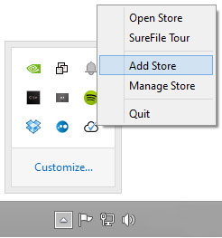
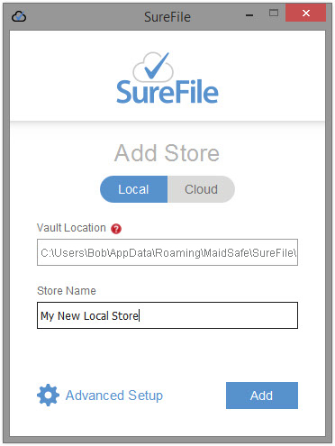
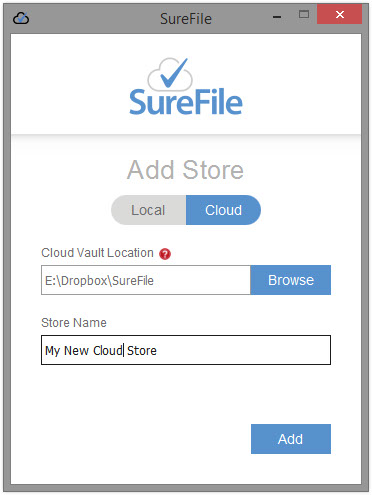
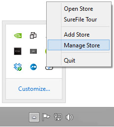
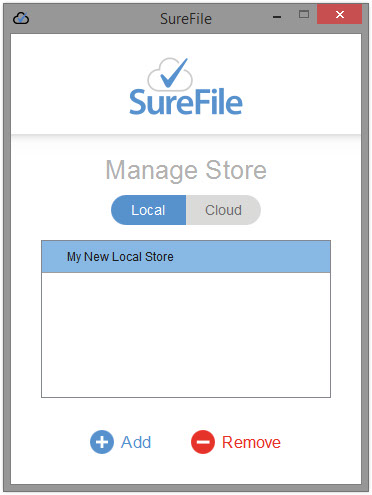
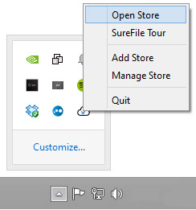
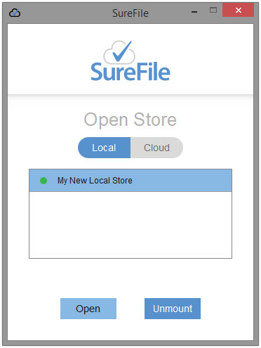
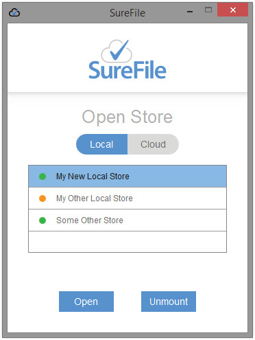

SureFile Tutorial
Add a Store
To add a SureFile Store, right click the SureFile system tray icon and choose Add Store.
Add a Local Store
To add a Local Store, select the Local tab.
To create a local store in SureFile’s default location, simply enter a name of your choice into the Store Name field and then click the Add button.
If you would like to choose your own Vault location, click Advanced Setup and then browse to a location of your choice.
Add a Cloud Store
To add a Cloud Store, select the Cloud tab.
To create a Cloud Store, click the Browse button next to the Cloud Vault Location field and choose your cloud provider, such as your Dropbox folder and select it.
Then enter a name of your choice into the Store Name field and then click the Add button.
Please note that you will only be able to use data saved to your Cloud Store on the computer you set it up on. SureFile does not support syncing yet.
Remove a Store
To remove a SureFile Store, right click the SureFile system tray icon and choose Manage Store.
Now select either the Local tab or the Cloud tab, select the store you wish to remove and click Remove.
You will be asked to confirm this action.
Please note that Removing a Store will permanently delete will data held within it.
Open a Store
To view data secured by SureFile you first have to open the store it is saved in.
To Open a SureFile Store, right click the SureFile system tray icon and choose Open Store.
Now select either the Local tab or the Cloud tab, select the store you wish to open and click Open.
The chosen store will now be opened in your Windows File Explorer.
Mounting and Unmounting a Store
SureFile allows you to Mount and Unmount stores like external drives.
In your open store window, Mounted stores are shown with a green dot and Unmounted stores are shown with an orange dot.
To toggle a store between Mount and Unmount, select the corresponding store and click Mount or Unmount.